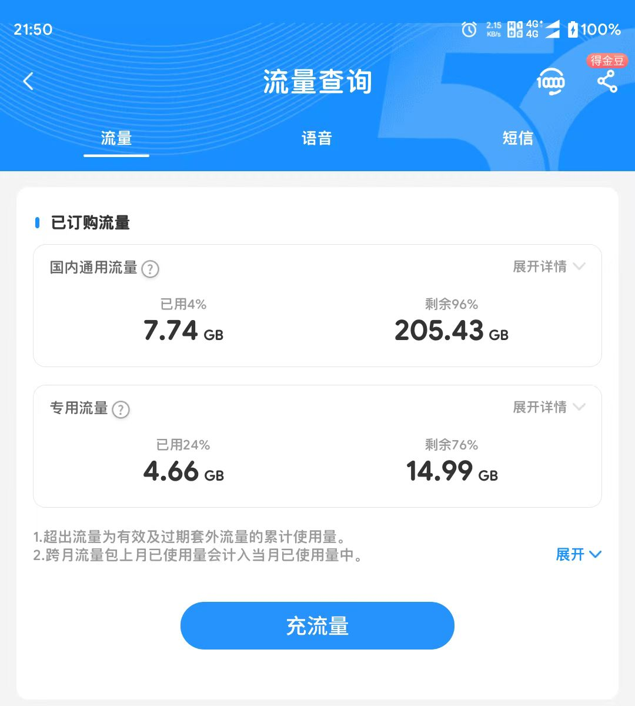
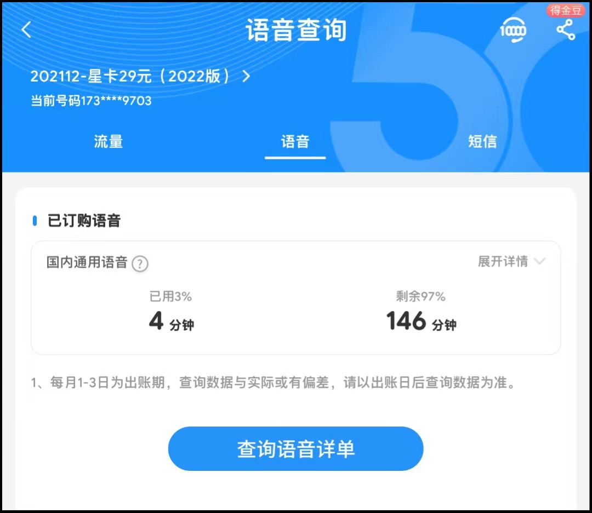
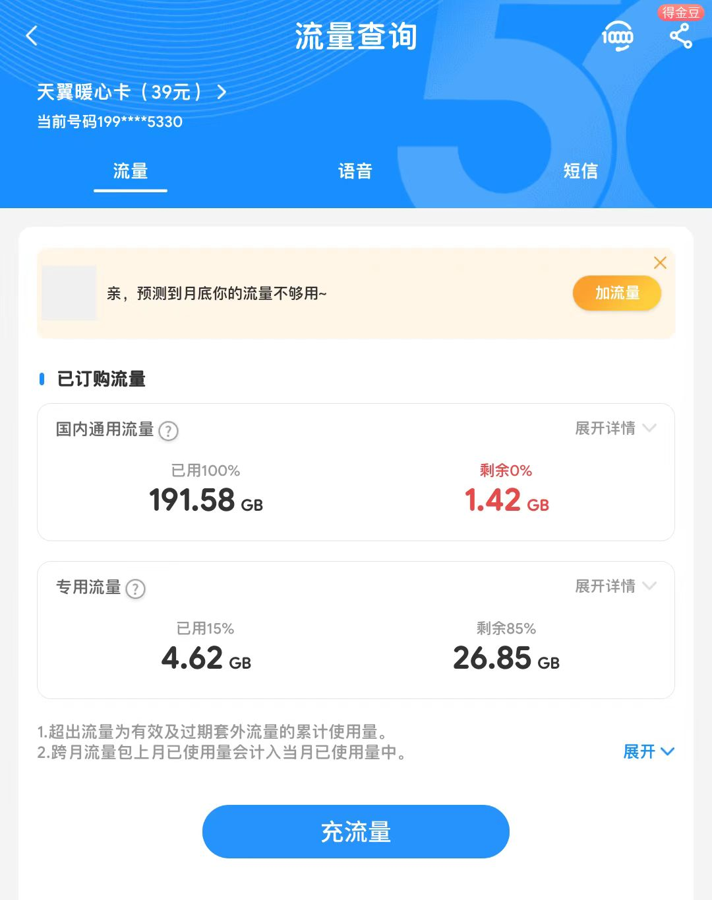
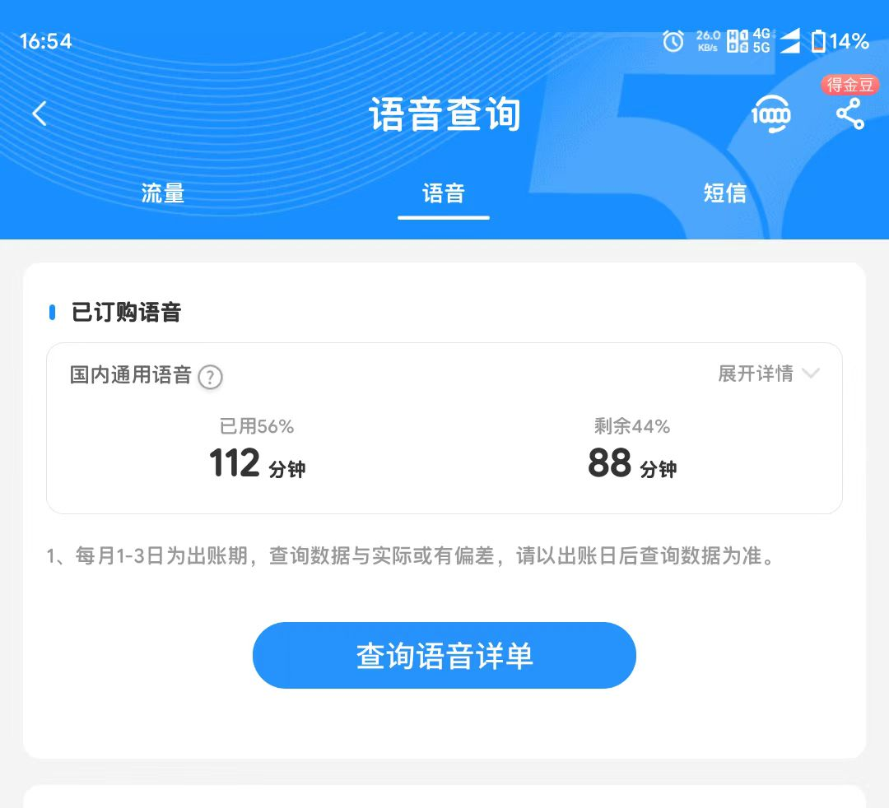
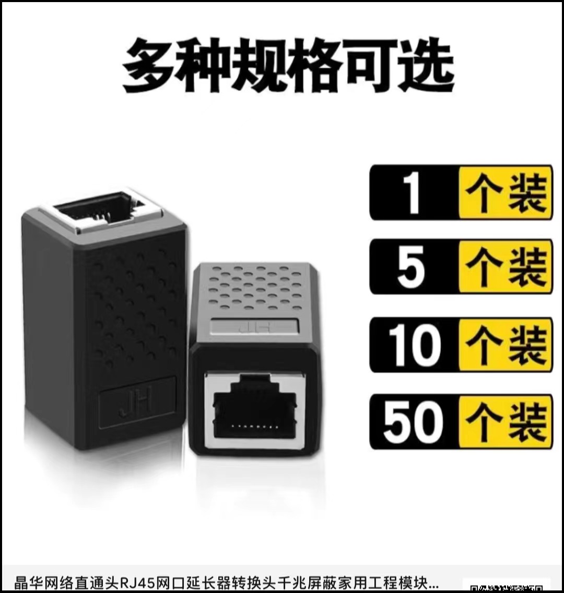
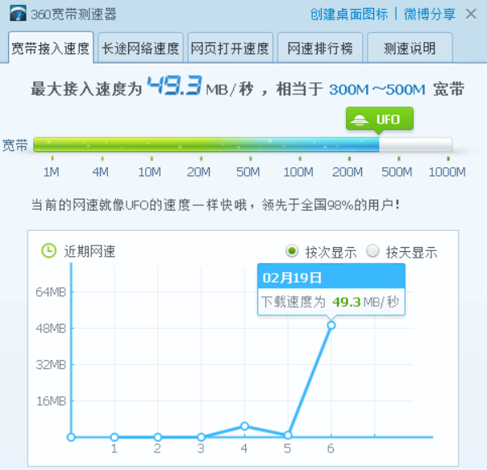

近况-最近在干啥？
使用All in one
ESXI为底层
介绍-吧啦吧啦
Hypervisor可以说是虚拟化的灵魂，作为虚拟机和物理机的桥梁，它们的主要功能是对物理设备进行抽象和管理，并作为中间人的角色管理虚拟机和宿主机设备之间的所有I/O操作。Hypervisor可以有效分隔物理资源，并将这些资源分配给不同虚拟环境（也就是需要这些资源的任务）使用。虚拟机监控程序可能位于操作系统的顶层（例如在便携式计算机上），或者直接安装在硬件上（例如服务器），这对应了目前主流的两种Hypervisor实现方式：Type 1和Type 2型，其区别主要在于Hypervisor和硬件之间有或没有额外的操作系统。我们所熟悉的VMware Workstation、VirtualBox、Parallels Desktop等运行在操作系统内的虚拟化软件都可以称作Type 2型
Microsoft Hyper- V、Red Hat KVM等都是Type 1型Hypervisor的代表，云计算中所使用的虚拟化技术，也大多是从这些Type 1型Hypervisor演化而来的。
ESXi作为VMware vSphere中最重要的一个组件，可在单个物理服务器上运行多个虚拟机。它提供了一种集中式管理的方法，可以轻松地管理和监视虚拟机、存储和网络资源。ESXi还提供了高可用性、自动化和灵活性等功能，以帮助组织更好地管理其IT基础设施。很多朋友可能不清楚vSphere和ESXi的关系，vSphere是一个更全面的虚拟化平台，是一套软件的集合，vSphere类似微软的 Office 办公套件，他它包括了vCenter, ESXi和vSphere等，这些软件联合起来就是vSphere。vSphere不是一个你可以安装使用的软件，它只是一个包含其它组件的集合名称。总之esxi就是Type 1型。
安装啥的就不过多介绍了
原因
说来很闲，众(就没几个)所周知我有一台x99服务器，
配置如下
主板：华南金牌x99F8D
CPU：E52683v3x2
内存：镁光ddr4 2133 16x4 共(64G)
显卡：发行者RX580(矿神)
电源：先马逾辉竞技V7雪妖版白色750W
硬盘：镁光nvme512g+杂牌256gSSD固态+西数2T机械
装的Win11，频繁蓝屏查出内存问题实际分单根独自测试通过，遂切换win0，然后从来没有蓝屏了。

用VMware Workstation运行Linux虚拟机想更新blog内容的，感觉这样操作无趣，偶然一个想法装虚拟系统运行Windows开启显卡直通通过显示器输出画面，这样一台主机运行多个操作系统，直通显卡的Windows当做我常用系统。
那么多虚拟化方案为什么选择会ESXi？ 因为：上手简单，稳定和方便。
演示图


找工作
只能先随便找了，目前的见识太少主要还是身上没钱，招聘软件翻烂了都找不到工作，学校教的东西太浅太浅。考虑进厂了(实在不想进厂，一辈子都不想进工厂,说点难听的只要不是身体缺陷和天生脑子有问题，是个人都能干的工作每天跟个行尸走肉一样没有思想跟灵魂）
但是手上又没钱，干啥也没有想法，别的也不会，学历也一般，那也就只能一个月五六千块先进厂攒点钱，在想着干别的吧。
办手机卡
原来用的是29的黑龙江星卡，一年一续约长期29包210G流量+200分钟通话，月月用不完，但是我已经有三张卡了想减少费用办理19的资费的卡，湖南归属地。155g+100分钟通话，到手可以办理0元40g包，实现19元包195g+100分钟一年一续约，到期根据运营商政策续约。客服承认续约活动存在可以一直续约需要可自行办理。仅发湖南省内哦！点我办理
黑龙江星卡29，210g+200分钟通话，想要的可以申请这个 点我办理
注意：都是免费申请的，有问题的可以找我讨论交流，QQ:2913319095
湖南星：
 黑龙江星：
 改一下网络
家里路由器跟光猫在我爸妈卧室，安装的防盗门想穿个网线也很难，用无线的话想买AX210的pcie网卡但是esxi6.7不一定集成了驱动，我也没有直通网卡的需求。想到家里之前买的有品胜的无线中继，写的是300兆但是中继完成后就只剩下将近90兆。性能太拉胯并且还是信号百分之80的情况下。想着凑合着用但是这玩意偶尔会自己掉线，要么就是状态正常不能上网，这两天还有点抽风老是需要重新插拔不过也可以理解这东西已经买了四五年了都。
所以网线只能走墙上线槽（墙上有孔洞）结果发现网线水晶头太大塞不进去索性只能剪断，穿过后重新压水晶头。
购买网线钳、测线仪、水晶头、连接器，也不是专业的所以就拼多多随便买了。

重做水晶头后测速图：
此篇文章更新过后可能会持续停更半年！
 微信
微信 支付宝
支付宝